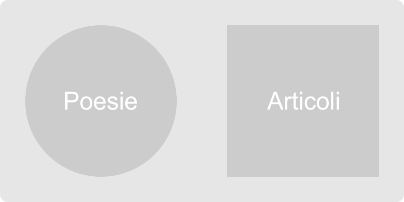

"«L’Altro Attimo» è quel momento del giorno che non vivi. Quell’istante che perdi".
Qui si legge e si esprime, ciò che svanirebbe in quel momento.
L’altro attimo è un piccolo sito dove ciascun lettore, può scegliere di essere scrittore e inviare le proprie poesie, saggi, brevi romanzi o racconti.
Ogni due settimane viene pubblicato uno dei migliori scritti inviati.
Se si volesse collaborare con noi, si tenga a mente che mentre per la Poesia scegliamo di non dare né avere alcuna restrizione, per tutti il resto vogliamo solo mostrare l’aspetto filosofico, artistico o poetico che sta dietro alla realtà, «Quell’altro aspetto» che sta dietro ogni cosa, che tal volta sfugge dietro alla banalità dei fatti e degli avvenimenti.
Il nostro scopo è mostrare quella bellezza nascosta dietro le cose e dentro le persone, le emozioni intese così come le conosciamo che nel corso del tempo si sono tal volta assopite o nascoste dietro la realtà che ogni giorno vediamo e proviamo.
